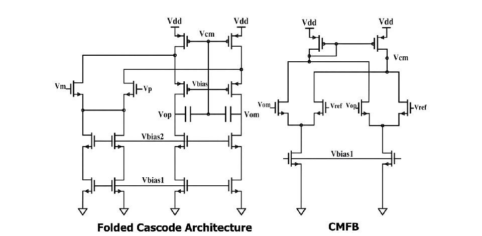

Design targets
- 100 dB open-loop gain
- 2.3 MHz unity-gain bandwidth
- 50° phase margin
- 20 Hz 3 dB cutoff
- 1.8 V supply · 0.5 mW target dissipation
- 1 V peak-to-peak output swing · 5 pF load
 LOHAN ATAPATTU
LOHAN ATAPATTUAnalog IC design · 2025
A fully differential op-amp designed for low-frequency filter applications in EEG acquisition systems.
RESEARCH SUMMARY
The amplifier was designed as a bias network, a fully differential folded-cascode transimpedance stage, and a common-source gain stage. Common-mode feedback regulates the output level, while Miller compensation stabilizes the cascaded stages. Its role is to provide a low-noise differential building block for the electrode-impedance measurement path.
DESIGN TARGETS & SIMULATION
The report evaluates TT, FF, SS, SF, and FS process corners from 20–50 °C. Pre-layout simulations report 44.19 µV DC offset and 8.67 nV/√Hz DC output noise. After parasitic extraction, low-frequency CMRR is approximately 90 dB.
The final layout was completed and submitted to TinyTapeout for fabrication.
DESIGN MATERIALS
The report documents the circuit architecture and the completed physical layout.
